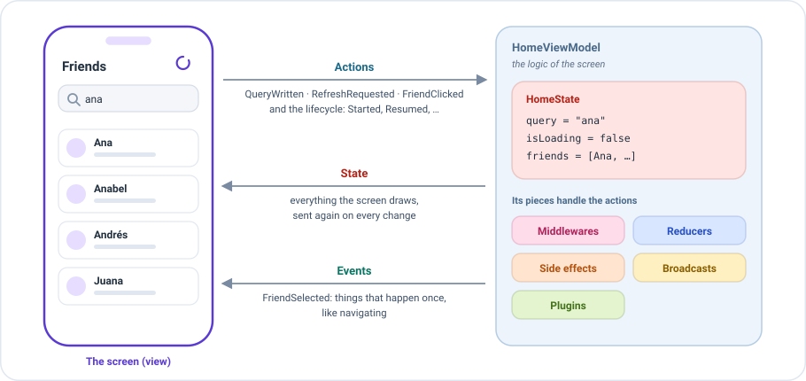
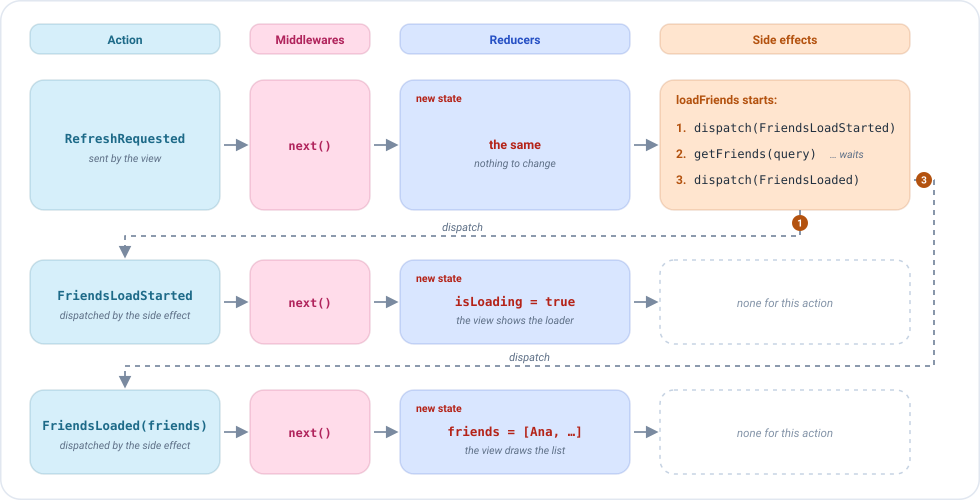
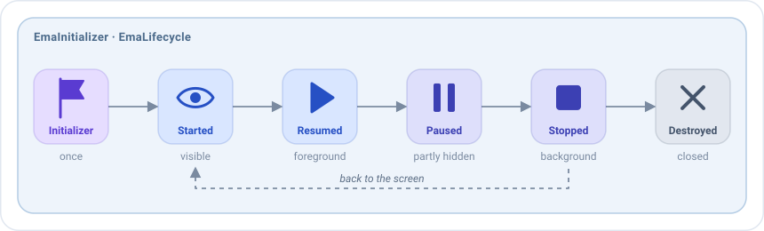

ViewModel¶
An EmaViewModel is the logic of a screen. The view only draws and tells what the user does; the ViewModel
decides everything else. That is where all the pieces described in the previous pages come together: the state, the
actions, the events, and the reducers, side effects,
middlewares, broadcasts and plugins that handle them.

The conversation between the two always has the same shape:
- The view sends actions: what the user does, like writing in the search field or pulling to refresh, and the lifecycle of the screen.
- The ViewModel sends back the state: everything the screen draws. Each time it changes, the view draws it again.
- And the events: what happens once, like navigating to the detail of a friend.
Each screen has its own ViewModel. It is a plain Kotlin class, with no platform code, so it can be tested and shared between platforms.
Your first ViewModel, in three steps¶
1. Extend EmaViewModel with the three types of the screen, and pass the initial state:
class HomeViewModel(
private val getFriendsUseCase: GetFriendsUseCase,
initialState: HomeState = HomeState.DEFAULT
) : EmaViewModel<HomeState, HomeAction, HomeEvent>(initialState)
2. Declare its pieces in setup. It returns source { }, where each kind of piece has its own block:
class HomeViewModel(
private val getFriendsUseCase: GetFriendsUseCase,
initialState: HomeState = HomeState.DEFAULT
) : EmaViewModel<HomeState, HomeAction, HomeEvent>(initialState) {
override fun setup() = source {
reducers {
add<HomeAction> { action ->
when (action) {
is HomeAction.QueryWritten -> state.copy(query = action.query)
is HomeAction.SideEffects.FriendsLoadStarted -> state.copy(isLoading = true)
is HomeAction.SideEffects.FriendsLoaded -> state.copy(isLoading = false, friends = action.friends)
is HomeAction.SideEffects.FriendsLoadFailed -> state.copy(isLoading = false, dialog = HomeDialog.LoadError)
is HomeAction.RefreshRequested,
is HomeAction.FriendClicked -> state
}
}
}
sideEffects {
add<HomeAction.RefreshRequested>(concurrency = SideEffectConcurrency.Leading) {
dispatch(HomeAction.SideEffects.FriendsLoadStarted)
getFriendsUseCase(GetFriendsUseCase.Input(state.query))
.onSuccess { friends -> dispatch(HomeAction.SideEffects.FriendsLoaded(friends)) }
.onFailure { dispatch(HomeAction.SideEffects.FriendsLoadFailed) }
}
add<HomeAction.FriendClicked> { action ->
publish(HomeEvent.FriendSelected(action.friend))
}
}
}
}
3. Give it to the screen. The screen creates it once, and keeps it while the screen exists:
emaScreen(
screenContent = HomeScreenContent(),
viewModel = { HomeViewModel(getFriendsUseCase) },
onEvent = { event -> /* navigation */ }
)
That's all: the screen draws the state, sends the actions and handles the events. See Compose screens and Dependency injection.
What happens when the user does something¶
Every action takes the same path: middlewares, reducers, side effects. The reducers return the new state, and the view draws it. When a side effect dispatches an action, that action starts the path again from the beginning.
This is a refresh in the ViewModel above. Each row is one action:

- The view sends
RefreshRequested. The reducers leave the state as it is, and the side effectloadFriendsstarts. - The side effect dispatches
FriendsLoadStarted. It goes through the middlewares, and a reducer returnsisLoading = true: the view shows the loader. - The side effect calls the use case and waits. The screen keeps working meanwhile.
- When the friends arrive, it dispatches
FriendsLoaded(friends). Same path: a reducer puts them in the state, and the view draws the list.
This ViewModel has no middlewares, so each action goes straight on, as if a middleware called next().
The setup¶
setup is where the ViewModel declares its pieces. Each kind has its own block:
| Block | Adds |
|---|---|
middlewares { } |
Middlewares: they decide the path of an action before anything else. |
reducers { } |
Reducers: they return the next state. |
sideEffects { } |
Side effects: they run the work that an action starts. |
broadcasts { listen<T>() } |
Broadcasts: the actions of other screens that it receives. |
plugins { } |
Plugins: groups of pieces reused in many screens. |
A few rules apply to all of them:
add<Type> { }creates a piece for the actions of that type, andadd(piece)installs a piece that already exists, like a property of the ViewModel or a plugin.addaccepts several pieces,add(first, second), or a collection,add(pieces). Two pieces of the same kind can also be joined withfirst + second, which gives a list thataddaccepts.- The pieces of the same kind run in the order they are added. A block can be used more than once: its pieces go after the ones of the previous blocks of the same kind.
setupruns once, the first time the ViewModel is used, not in its constructor. So it can use the properties of the class, like its use cases.
Pieces are values¶
By default a ViewModel receives only its use cases and its state (and its EmaStateStore if it has a backup). Receive pieces in the constructor only when the behaviour must change depending on the build.
A piece doesn't have to be written inside setup. It can be a property of the ViewModel, declared with reducerOf or
sideEffectOf, and installed with add:
class HomeViewModel(
private val getFriendsUseCase: GetFriendsUseCase,
initialState: HomeState = HomeState.DEFAULT
) : EmaViewModel<HomeState, HomeAction, HomeEvent>(initialState) {
private val homeReducer = reducerOf(HomeAction::class) { action ->
when (action) {
is HomeAction.QueryWritten -> state.copy(query = action.query)
is HomeAction.SideEffects.FriendsLoadStarted -> state.copy(isLoading = true)
is HomeAction.SideEffects.FriendsLoaded -> state.copy(isLoading = false, friends = action.friends)
is HomeAction.SideEffects.FriendsLoadFailed -> state.copy(isLoading = false, dialog = HomeDialog.LoadError)
is HomeAction.RefreshRequested,
is HomeAction.FriendClicked -> state
}
}
private val refresh = sideEffectOf(
HomeAction.RefreshRequested::class,
concurrency = SideEffectConcurrency.Leading
) {
dispatch(HomeAction.SideEffects.FriendsLoadStarted)
getFriendsUseCase(GetFriendsUseCase.Input(state.query))
.onSuccess { friends -> dispatch(HomeAction.SideEffects.FriendsLoaded(friends)) }
.onFailure { dispatch(HomeAction.SideEffects.FriendsLoadFailed) }
}
private val openFriend = sideEffectOf(HomeAction.FriendClicked::class) { action ->
publish(HomeEvent.FriendSelected(action.friend))
}
override fun setup() = source {
reducers { add(homeReducer) }
sideEffects {
add(refresh, openFriend)
}
}
}
The setup only installs them. That is what lets a ViewModel receive a piece in its constructor, without knowing which
implementation it gets: the same screen can call the real backend in production, use a mock in a demo build and a fake in
the tests. See Dependency injection and environments.
The lifecycle as actions¶
The EmaViewModel also receives the lifecycle states and the initialization data as actions. The same pieces that handle
the user actions can handle these ones too.

| Action | When |
|---|---|
EmaInitializer |
Once, the first time the screen is created: its initializer, or EmaInitializer.EMPTY. |
EmaLifecycle.Started |
The screen becomes visible. |
EmaLifecycle.Resumed |
The screen is in the foreground. |
EmaLifecycle.Paused |
The screen is no longer fully visible. |
EmaLifecycle.Stopped |
The screen goes to the background. |
EmaLifecycle.Destroyed |
The last action, right before the ViewModel is closed. |
The initializer arrives once, so recreating the screen doesn't receive it again. A reducer can change the state when these actions arrive, and a side effect can react to them:
override fun setup() = source {
reducers {
// The initializer gives the screen its first state
add<HomeInitializer> { initializer ->
when (initializer) {
is HomeInitializer.HomeUser -> state.copy(user = initializer.user)
}
}
// The dialog is closed when the user leaves the screen
add<EmaLifecycle.Stopped> { state.copy(dialog = null) }
}
sideEffects {
// The friends are loaded once, when the screen is created
add<HomeInitializer> { dispatch(HomeAction.RefreshRequested) }
// And refreshed every time the user comes back to the screen
add<EmaLifecycle.Resumed> { dispatch(HomeAction.RefreshRequested) }
}
}
For example, work that only makes sense while the user sees the screen, like a timer or location updates, starts with
Started and stops with Stopped.
When the ViewModel is closed¶
After Destroyed, the ViewModel is closed and the work still running is cancelled, unless it is allowed to finish.
See When the screen is closed.
The ViewModel and its screen¶
One ViewModel per screen. The screen creates it the first time it is opened, with the viewModel function you give
it, and keeps it while the screen exists. Recreating the view or coming back to the screen reuses it. When the screen is
closed for good, the ViewModel receives Destroyed and is closed. Opening the screen again creates a new one.
emaScreen(
screenContent = HomeScreenContent(),
// Called once, the first time the screen is opened
viewModel = { HomeViewModel(getFriendsUseCase) },
onEvent = { event -> /* navigation */ }
)
Drawing before the first change¶
By default the screen draws the initial state at once. To avoid a flash of empty content, override
updateOnInitialization with false: the screen waits until the ViewModel receives its first action of the screen, or
an initializer other than EmaInitializer.EMPTY.
class HomeViewModel(
private val getFriendsUseCase: GetFriendsUseCase,
initialState: HomeState = HomeState.DEFAULT
) : EmaViewModel<HomeState, HomeAction, HomeEvent>(initialState) {
override val updateOnInitialization = false
// ...
}
Configuration¶
The constructor also receives the configuration of the ViewModel: by default the one set with Emanate.init. It
decides where the ViewModel runs and what happens with its errors. See Configuration.
class HomeViewModel(
private val getFriendsUseCase: GetFriendsUseCase,
initialState: HomeState = HomeState.DEFAULT
) : EmaViewModel<HomeState, HomeAction, HomeEvent>(
initialState,
configuration = EmaConfiguration.Android(debug = BuildConfig.DEBUG)
) {
// ...
}
Logs¶
Every EmaViewModel logs each action it receives, with the state before and after it. By default the logs go to the
standard output, with the name of the ViewModel as tag. A block like this is shown for each action (abbreviated):
EMA_HomeViewModel: ********************** STARTING EMA ACTION LOGGING **********************
EMA_HomeViewModel: | Dispatched action
EMA_HomeViewModel: | QueryWritten(query=ana)
EMA_HomeViewModel: | State before apply action
EMA_HomeViewModel: | HomeState(query=, isLoading=false, friends=[])
EMA_HomeViewModel: | State after apply action
EMA_HomeViewModel: | HomeState(query=ana, isLoading=false, friends=[])
EMA_HomeViewModel: ********************** FINISHED EMA ACTION LOGGING **********************
The logger of the configuration decides where the logs go. To
send them to your own logger, implement EmaLogger in the configuration:
Emanate.init(
EmaConfiguration.Android(debug = BuildConfig.DEBUG).copy(
logger = EmaLogger { tag, message -> Timber.tag(tag).d(message) }
)
)
Under the hood: EmaSource¶
Inside every EmaViewModel there is an EmaSource: the engine that runs the pieces. The source { } of setup is
what builds it. The ViewModel adds what a screen needs on top of it: the lifecycle and the initializer as actions, the
logs, and a life tied to its screen.
You don't need to know more to write screens. If you need the same engine without a screen, for example for a state shared by several screens, see EmaSource.